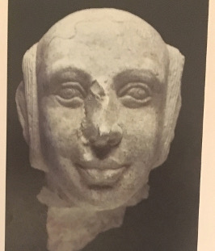
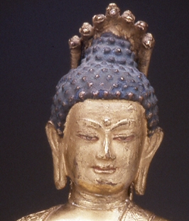
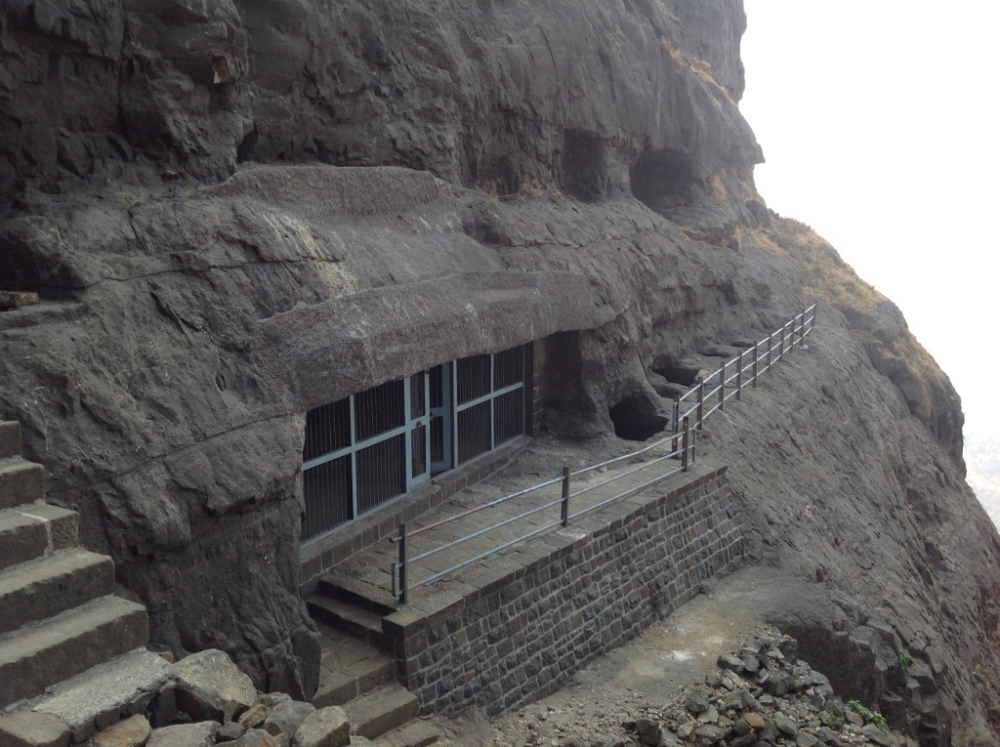
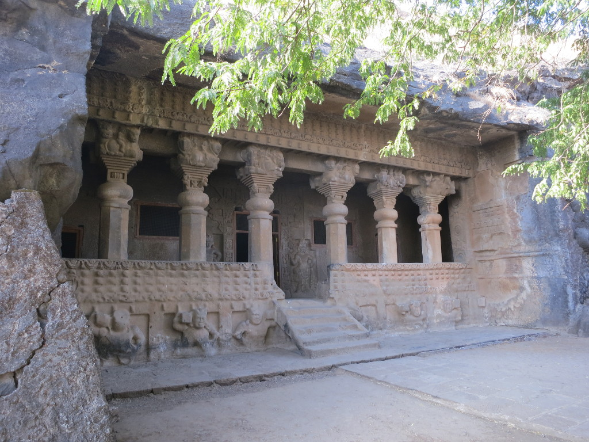

Sātakarṇi and Nāgārjuna
Buddhism as a Public Religion Under the Sātavāhanas
Andrew Ollett g Toronto, August 2017
licensed under CC BY-SA 4.0 
{kind=link}
Major Questions
- What might the relationships between the state and a religion mean in the Deccan in the early centuries of the common era?
- What do we know?
- How do we characterize it?
- What kind of story can we tell?
Religion and the State
- Does the state maintain circumstances that are (legally, financially, etc.) favorable or unfavorable to Buddhist communities?
- Do these communities have a “political philosophy” that sets out a normative vision of the state’s role in society as a whole?
- Does the state have a normative vision of its own role vis-à-vis different religious communities?
- If so, how does this vision cohere or conflict with the religious commitments of individual rulers?
Religion and the State

Gautamīputra Śrīyajña Sātakarṇi

Nāgārjuna
What do we know?
- Inscriptions (around 700)
- Art and architecture
- Literary sources
Political Philosophy and Principles
The Political Philosophy of the Sātavāhanas
The Nāṇeghāṭ Inscription of Nāgannikā
The Political Philosophy of the Sātavāhanas
The Nāsik Inscription of Gautamī Balaśrī
Eulogy of Gautamīputra Śrī Sātakarṇi at Nāsik
abhayodakadānakilinanibhayakarasa
his fearless hands were always damp with the water by which he granted safety
Eulogy of Gautamīputra Śrī Sātakarṇi at Nāsik
porajananivisesasamasukhadukhasa
his pleasures and pains were completely identical with those of his citizens
Eulogy of Gautamīputra Śrī Sātakarṇi at Nāsik
of Gautamīputra Śrī Sātakarṇi:
avipanamātusasūsākasa
his obedience to his mother was unfailing...
of Vāsiṣṭhīputra Śrī Puḷumāvi:
mahādevīya ayakāya sevakāmo piyakāmo ca
desiring to serve and please the noble Mahādevī
Nāgārjuna, Ratnāvalī 3.81
Intent on serving your parents,
respectful to the principles of your lineage,
Using your resources well, patient, generous,
with kindly speech, without divisiveness and truthful...
trans. Hopkins
Eulogy of Gautamīputra Śrī Sātakarṇi at Nāsik
dhamopajitakaraviniyogakarasa
he has set up taxes that are collected in accordance with dharma
Nāgārjuna, Ratnāvalī 3.52–54
Provide stricken farmers with seeds and sustenance,
Eliminate high taxes by reducing their rate.
Protect [the poor] from the pain of wanting [your wealth], set ut no [new] tolls and reduce those [that are heavy],
Free them from the suffering [that follows
when the tax collector] is waiting at the door.
Eliminate thieves and robbers
in your own and others’ countries.
Please set prices fairly
and keep profits level [when things are scarce].
trans. Hopkins
Nāgārjuna, Ratnāvalī 4.27
dharmārthaṁ yadi te rājyaṁ na kīrtyarthaṁ na kāmataḥ
tataḥ saphalam atyartham anarthārtham ato ’nyathā
If your kingdom is for the sake of dharma,
not for the sake of glory, and not for the sake of desire,
then it will be successful beyond measure.
Otherwise, it will be for nothing.
Nāgārjuna, /Ratnāvalī, 4.42
mātsyanyāyaś ca te naivaṃ nyāyād rājyaṃ bhaviṣyati
na cānyāyo na vādharmo dharmaś caivaṃ bhaviṣyati
By following this course,
you won’t have the “law of the fish”;
you will have a kingdom.
In this way there will be no injustice;
no lack of dharma, but rather dharma.
Religious Accommodations and Privileges
Nāgārjuna, Ratnāvalī 4.18
dharmādhikārā ye cānye pūrvarājapravartitāḥ
devadroṇyādayas te ’pi pravartyantāṁ yathā sthitāḥ
And as for the religious privileges
instituted by previous kings,
such as the procession of deities,
they should be left in place.
Nāgārjuna, Ratnāvalī 4.88–89
tathāgatābhisaṁdhyoktāny asukhaṁ jñātum ity ataḥ
ekayānatriyānoktād ātmā rakṣya upekṣayā
upekṣayā hi nāpuṇyam dveṣāt pāpaṁ kutaḥ śubham
mahāyāne yato dveṣo nātmakāmaiḥ kṛto ’rhati
Since it is not easy to know
what the tathāgatas are getting at in their statements,
protect yourself from the statement
of a single vehicle, or three vehicles, with impartiality.
For impartiality is no sin.
Sin comes from hatred. How can that be good?
Therefore it is in one’s interest
not to hate the Mahāyāna.
Nāgārjuna, Ratnāvalī 3.37
You should not respect, revere or do homage to others, the Forders
Because through that the ignorant would become enamoured of the faulty.
trans. Bibliotheca Polyglotta
Patronage
Nāgārjuna, Ratnāvalī 3.31–32
With respect and without stint
you should construct images of Buddha, reliquaries and temples
And provide abundant riches, food, necessities and so forth.
Please construct from all precious substances
images of Buddha with fine proportions,
Well designed and sitting on lotuses
adorned with all precious substances.
trans. Bibliotheca Polyglotta
Nāgārjuna, Ratnāvalī 3.34
Revere the reliquaries with gold and silver flowers,
Diamonds, corals, pearls, emeralds, cat’s eye gems and sapphires.
trans. Bibliotheca Polyglotta
Sātavāhana Patronage of Buddhist Institutions
When and how do members of the royal family make donations (of villages, structures, or money) to Buddhist communities?
(Excluding for now the donations of high-ranking officials and “feudatories” such as Mahāraṭṭhis who are not themselves members of the royal family.)
Nāgārjuna’s Saṅghārāma
Where was Nāgārjuna’s Saṅghārāma?
- No shred of evidence from coastal Andhra (Amarāvati, Nāgārjunakoṇḍa, etc.).
- Chinese pilgrims (Faxian and Xuanzang) report that the Sātavāhana king constructed a five-story rock-cut saṅghārāma for Nāgārjuna.
Nāgārjuna’s Saṅghārāma
- It is called 波羅越 (pārāvata?) and glossed as 鴿 gē “dove” by Faxian.
- There is an as-yet unidentified mountain within the Sātavāhana Empire called cakora “patridge” in several inscriptions.
- It is called 跋邏末羅耆釐 (bhramaragiri?) and glossed as 黑蜂 hēifēng “black bee” by Xuanzang, and similarly by Daoxuan. He locates it in (Southern) Kosala.
Some attempt at a synthesis
Buddhism is not a “State Religion”
What is it then?
The King as a Public Figure
na kevalam ayaṃ dharmo rājña evopadiśyate anyebhyo ’pi yathāyogaṃ sattvebhyo hitakāmyayā
This teaching is not only referred to the King,
but for other beings as well,
according to their abilities and for their benefit.